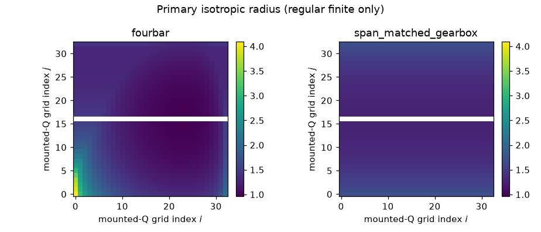
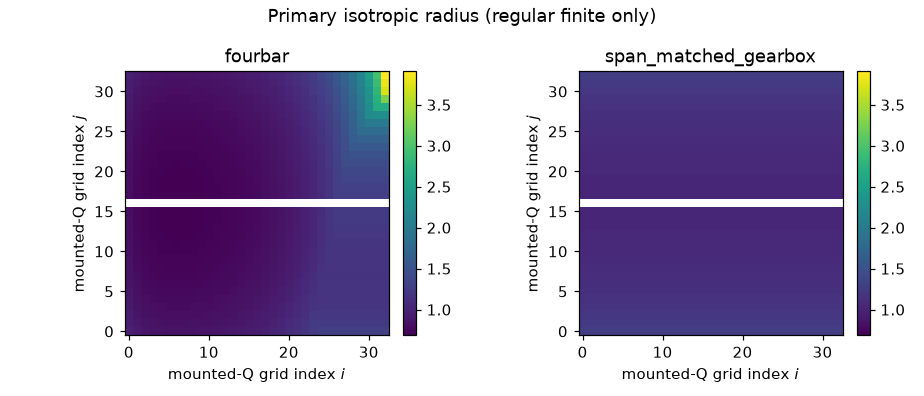
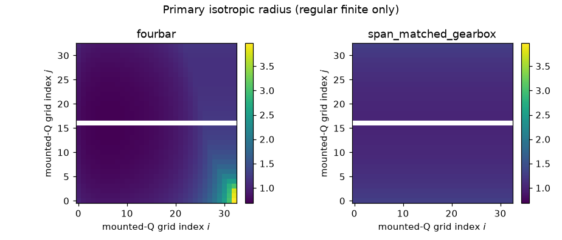
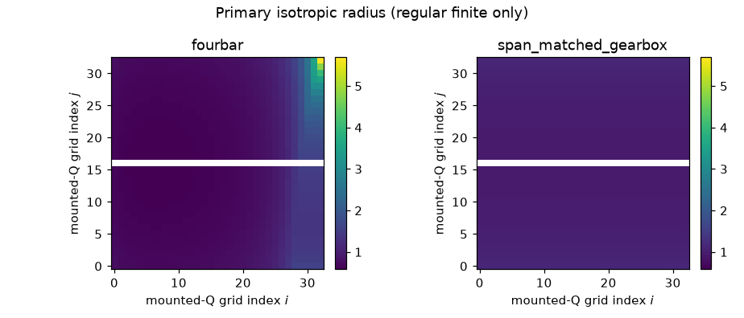
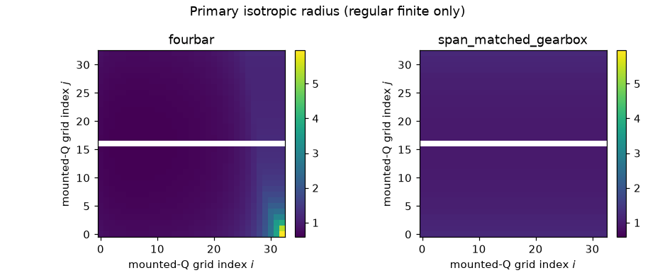
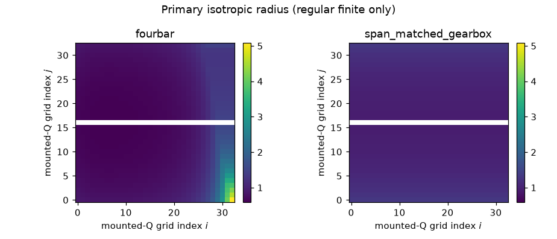
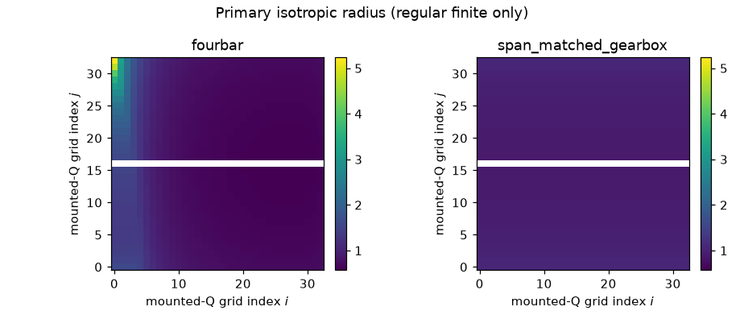
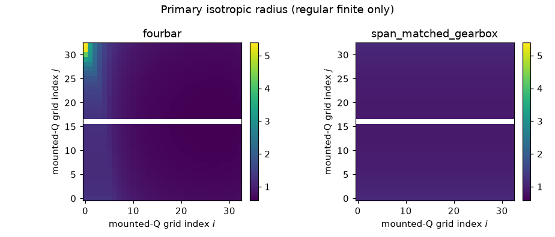
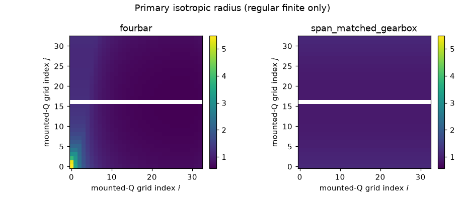
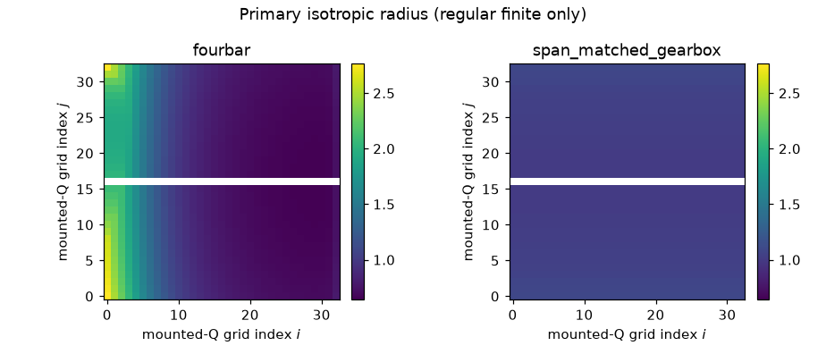

Mode canonical · cases 17 · records 55539 · README · methods.md · biological pointer · smoke_selection.json · schema.json
Shared display cell span_j1_145_j2_145 has memberships
core_span_sweep, biological_refinement and one physical
evaluation reused by both matrices. 175° cells remain
boundary_stress_only.
| J1 \ J2 | 95° certified_primary | 145° certified_primary | 175° boundary_stress_only |
|---|---|---|---|
| 95° certified_primary | span_j1_095_j2_095 core_span_sweep | span_j1_095_j2_145 core_span_sweep | span_j1_095_j2_175 core_span_sweep |
| 145° certified_primary | span_j1_145_j2_095 core_span_sweep | span_j1_145_j2_145 core_span_sweep, biological_refinement | span_j1_145_j2_175 core_span_sweep |
| 175° boundary_stress_only | span_j1_175_j2_095 core_span_sweep | span_j1_175_j2_145 core_span_sweep | span_j1_175_j2_175 core_span_sweep |
| J1 \ J2 | 135° certified_primary | 145° certified_primary | 150° certified_primary |
|---|---|---|---|
| 135° certified_primary | span_j1_135_j2_135 biological_refinement | span_j1_135_j2_145 biological_refinement | span_j1_135_j2_150 biological_refinement |
| 145° certified_primary | span_j1_145_j2_135 biological_refinement | span_j1_145_j2_145 core_span_sweep, biological_refinement | span_j1_145_j2_150 biological_refinement |
| 150° certified_primary | span_j1_150_j2_135 biological_refinement | span_j1_150_j2_145 biological_refinement | span_j1_150_j2_150 biological_refinement |









